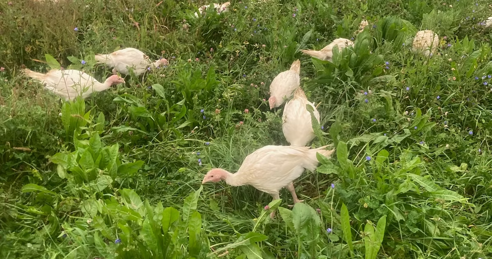

Our livestock are part of a mixed farm system designed for a small farm inside a national park landscape. Below: layers, broilers, turkeys, and sheep.
Layers
Eggs available daily at our front door until sold out.
Layers are the backbone of a mixed farm: steady food, steady chores, and a feedback loop between animals and land.
Our approach
- Pasture from April through December (into January, weather permitting)
- Organic feed from Maysville Elevator; draft power to haul feed as hens move daily
- Foraging grasses, clovers, forbs,roots left undisturbed so plants regenerate
Good land and soil stewardship equals healthy hens and high quality eggs.
For customers: refrigerate (40°F or below), cook thoroughly when serving a broad audience. See Ready-to-Lay Hens and Setting the Table.
Broilers
Bottomless pens moved twice daily to fresh forage.
Broilers are raised for meat,fast-growing birds. Basics: warmth early, clean water, good feed, fresh air, predator protection.
At Trapp Family Farm
- 3.5–6.5 lb processed; pasture with bottomless, predator-proof, moveable pens
- Available May–November only (we and the land rest in wet/cold months)
- Organic ration from Maysville Elevator; chicks from Eagle Nest Poultry
When buying: expect seasonality; we'll share pickup window, size range, storage. Cook to 165°F, refrigerate promptly. Email us for the pre-order list.
Turkeys

Thanksgiving turkeys,organic feed, daily fresh pasture.
The seasonal centerpiece bird: plan ahead for reservation and pickup.
Our Thanksgiving turkeys are fed only organic feed, moved daily to fresh pasture, given clean water and grit. Day-old poults from Eagle Nest Hatchery; brooded until big enough for pasture. When we offer turkeys, we communicate reservation deadline, pickup window, size ranges, and cooking guidance. Cook to 165°F in the thickest parts,use a thermometer. Email us for the pre-order list.
Sheep

Hair sheep on rotational grazing,fresh paddock daily or more.
Sheep bring food (lamb), fiber (wool), and pasture stewardship.
How we raise them
- Rotational grazing, free-choice minerals, gentle presence
- Deer exclusion fence allows stockpiled forage,fresh paddock nearly year-round
- Parasite management: rotation, monitoring, selective deworming, risk windows (e.g. lambing)
Our productive ewes expand the flock; customers enjoy exclusively grass-fed lamb. For half or whole lamb, contact us.